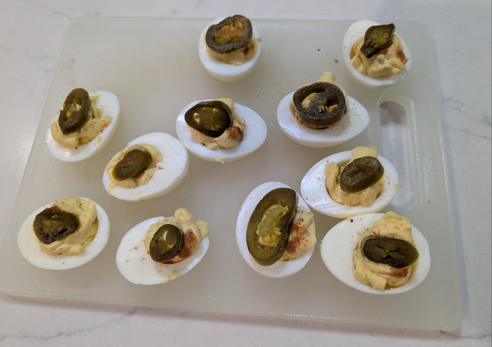

Deviled Eggs

Ingredients
- 12 hard-boiled eggs
- 80 g mayonnaise
- 2 tbs Dijon mustard
- ¼ tsp garlic powder
- 1 tsp rice wine vinegar
- 1 tbs sweet pickle relish
- 1 tsp Worcestershire sauce
- 1 tbs horseradish
- 1 tsp paprika, for garnish
- Salt, pepper, Cajun seasoning and hot sauce to taste
Directions
- Prep Eggs: Halve the eggs, remove yolks to a bowl, and set aside the egg whites.
- Mix Filling: Add remaining ingredients to the yolks and mix until smooth.
- Fill: Spoon or pipe the yolk mixture back into the egg white halves.
- Chill & Serve: Cover and refrigerate until ready to serve. Garnish with paprika and parsley flakes.
Chef's Notes
- Make a pastry bag to pipe the yolk into the egg whites by putting the yolk mixture into a zip-top bag, closing the top, and cutting one of the bottom corners
- To make Goblins, top each egg with a dusting of smoked paprika, two drops of Secret Aardvark Habanero Hot sauce, and a pickled jalapeno slice.
The Gumbo Page
Michael Fritsche
mbf@fritsche.org